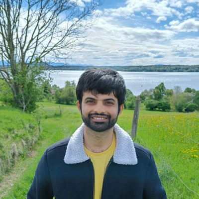

Recent Works
Conveniently simulate mechanics of living cells with CytoViz
Genviz - generate your onw query based simulations without LLM
Beehive - AI based simulations
Master Thesis : Orthogonal basis for simulation of Quantum dots
Past Works
Review of Variational Quantum Algorithms (2024)
Hybrid GNN for molecular energy prediction (2023)
Carbon footprint tracker (2022)
Ideal Match : Match making for sustainable ideas (2022)
Continuous process design for batch chemical plant (2018)
Simulation of non-linear cell mechanics (2017)
Tree climbing robot (2016)

CV
GitHub
LinkedIn